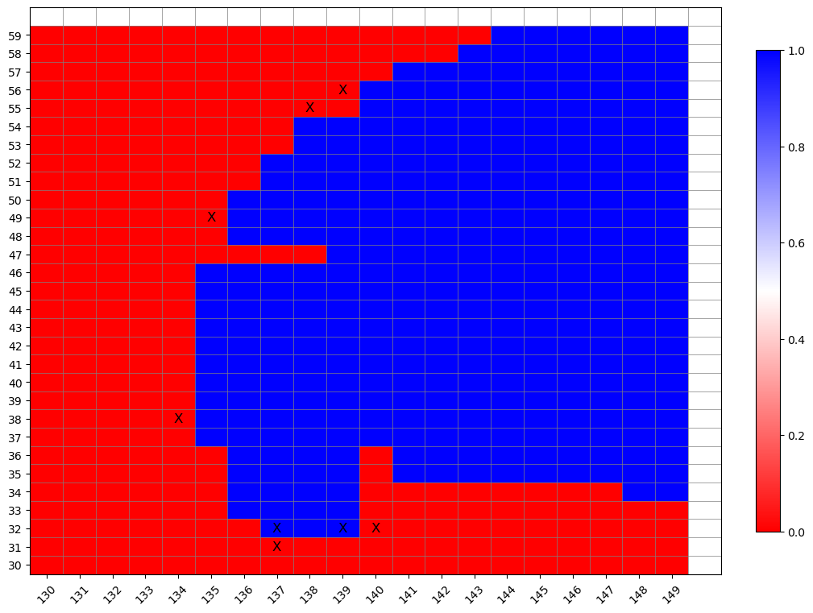
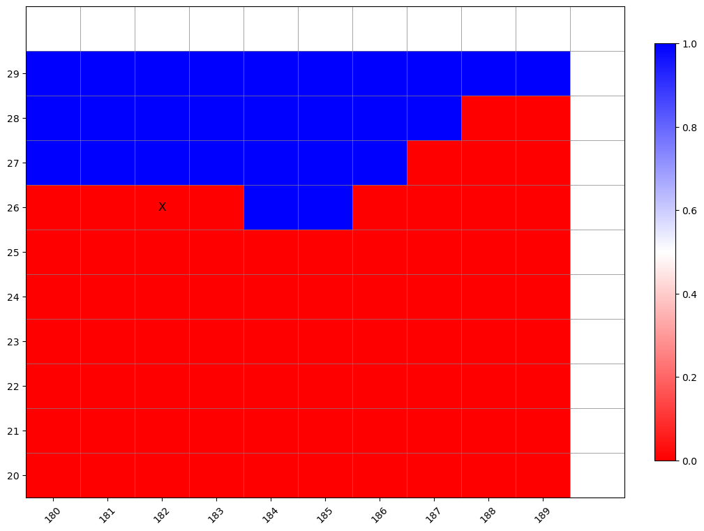
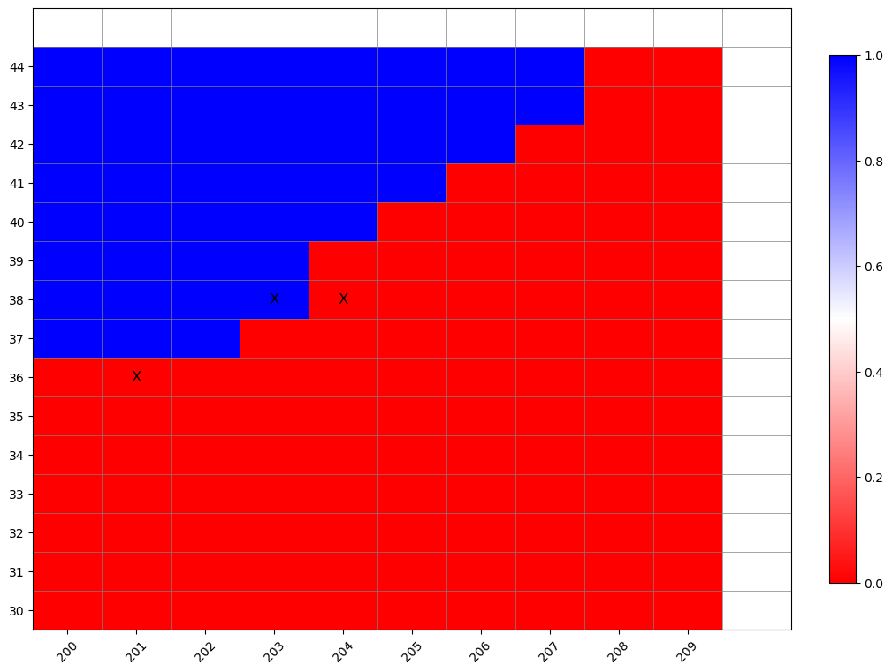
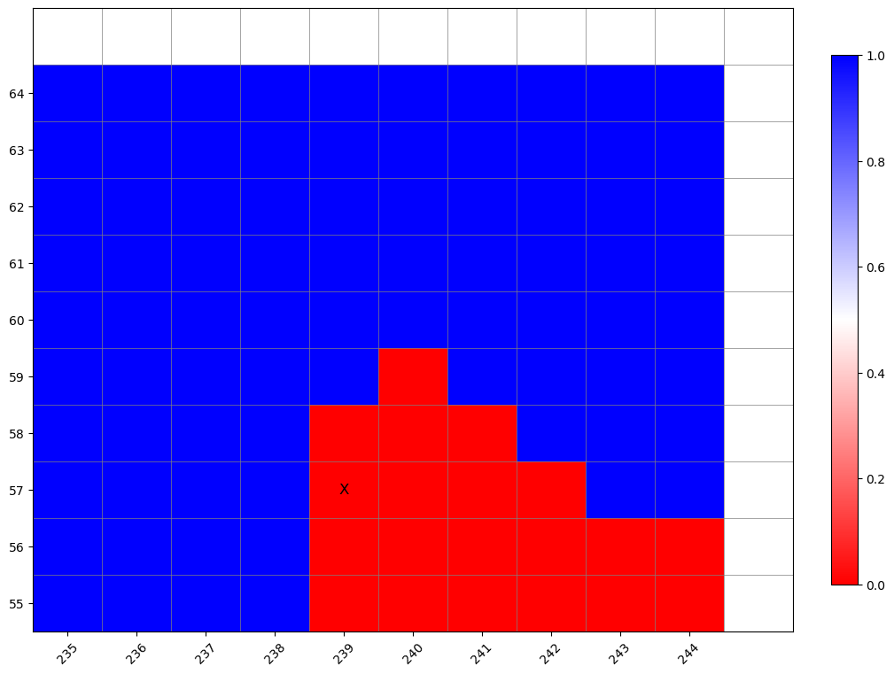
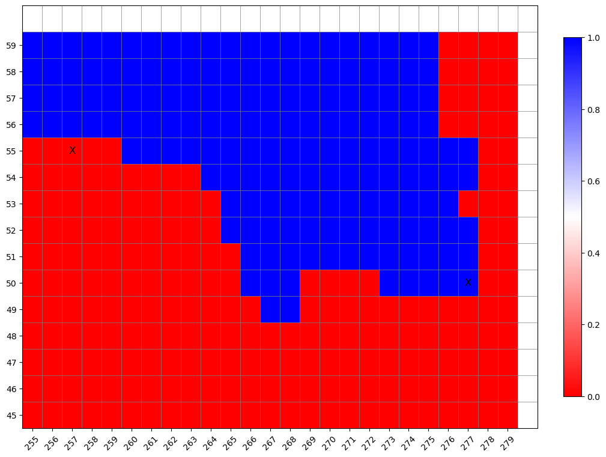
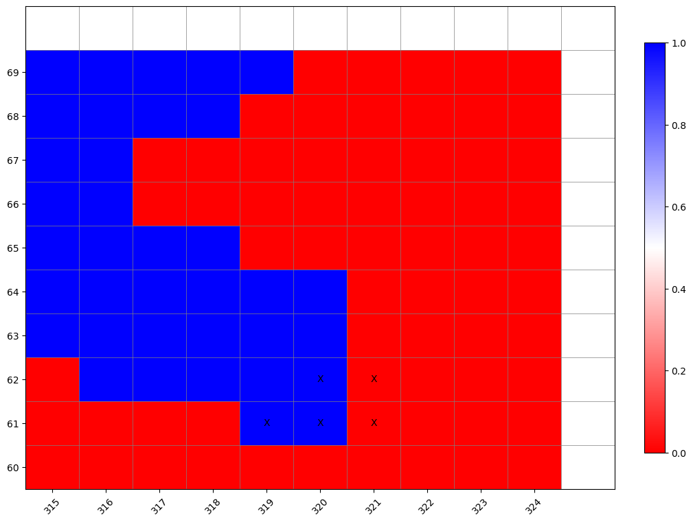
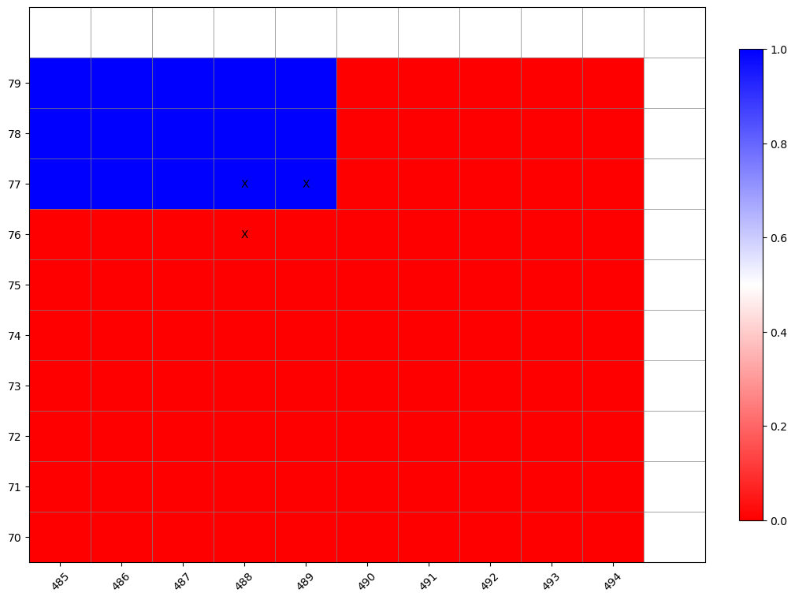
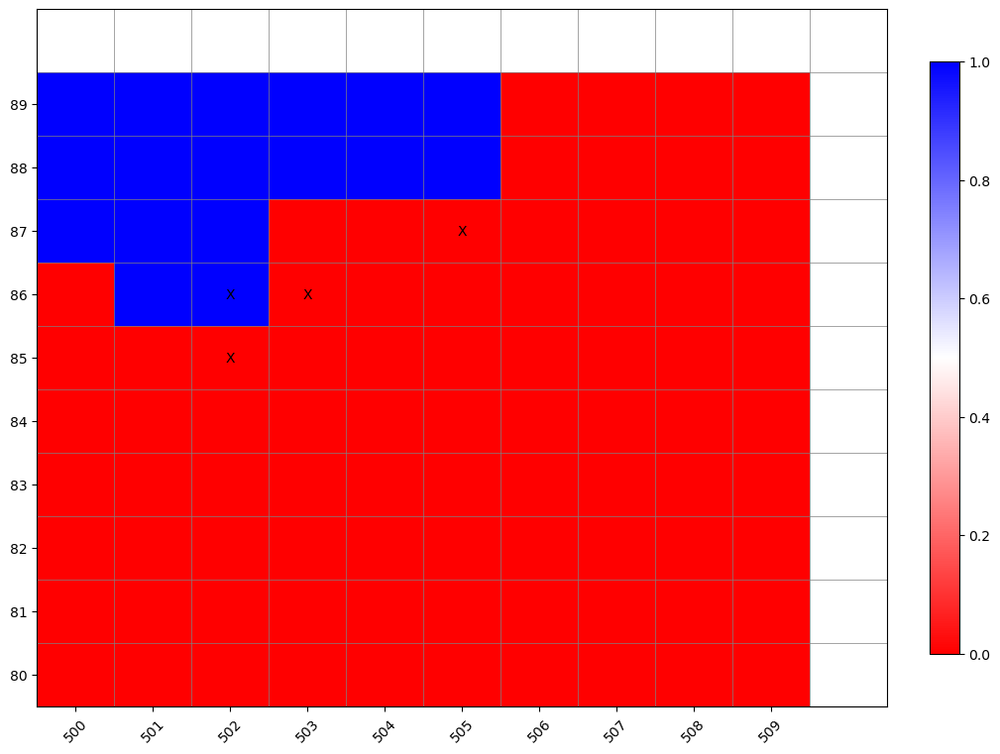
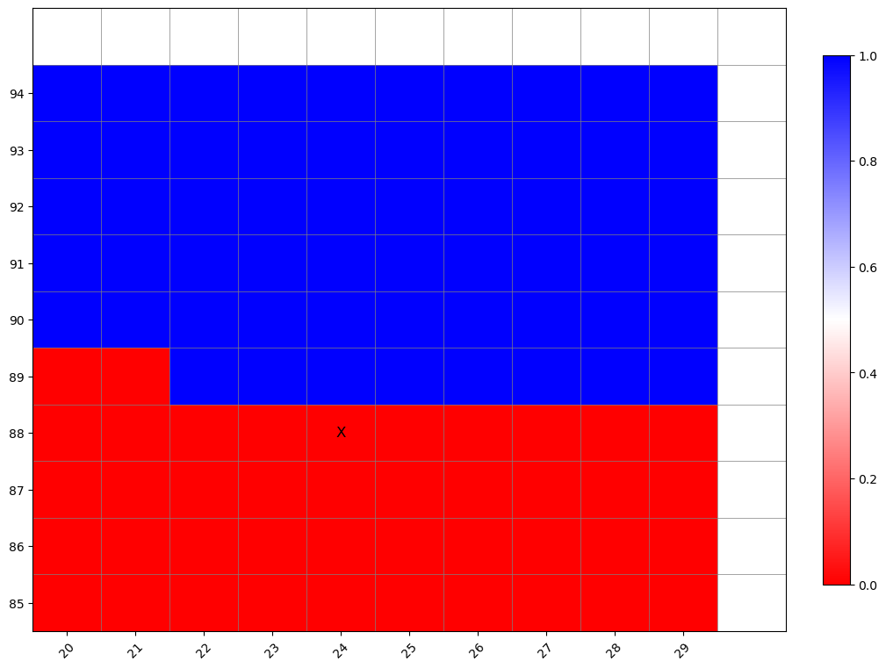
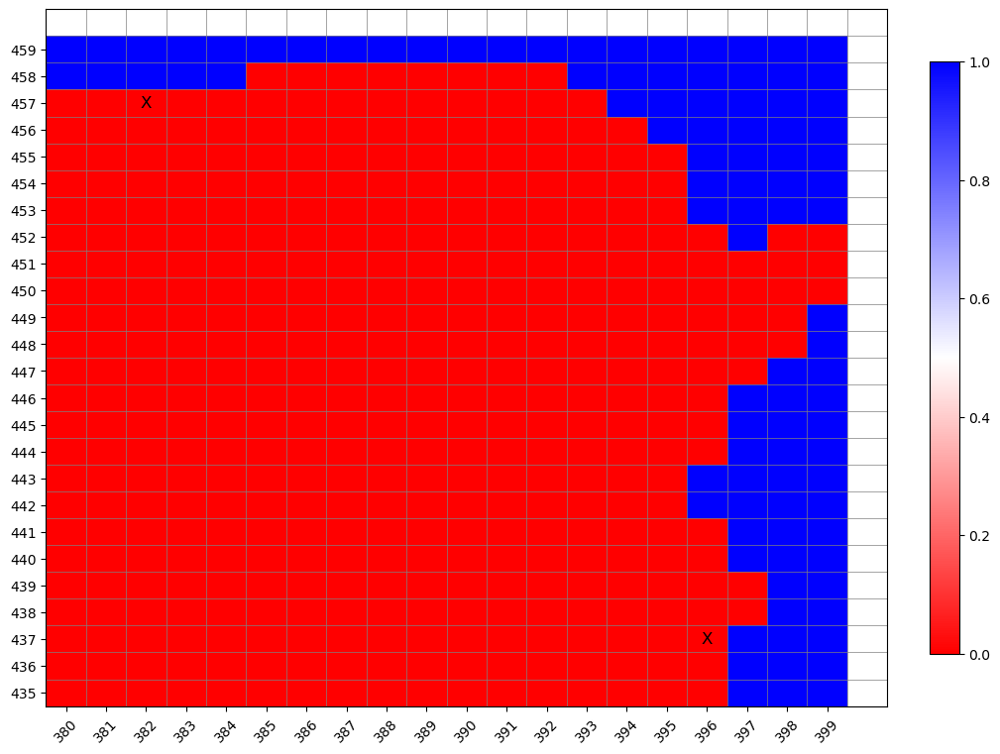

import os
import sys
sys.path.insert(0,os.path.abspath('../src/'))
%load_ext autoreload
%autoreload 2
%matplotlib inline
import numpy as np
import xarray as xr
import matplotlib.pyplot as plt
from topo_edit_util import map_mask, mom6_latlon2ij, map_maskij
path_old = '/glade/work/bryan/MOM6-data-files/Topography/tx2_3v2/'
file_old = 'topo.sub150.tx2_3v2.srtm.edit4.SmL1.0_C1.0.nc'
df_old = xr.open_dataset(path_old+file_old)
path_new = '/glade/work/bryan/tx2_3v3_Feb2026/'
file_new = 'topo.sub150.tx2_3v3.SRTM15_V2.4.edit1.nc'
df_new = xr.open_dataset(path_new+file_new)
df_new
<xarray.Dataset> Size: 19MB
Dimensions: (lath: 480, lonh: 540, latq: 481, lonq: 541)
Coordinates:
* lath (lath) float64 4kB -81.56 -81.46 -81.36 ... 89.33 89.6 89.86
* lonh (lonh) float64 4kB -286.7 -286.0 -285.3 ... 71.33 72.0 72.67
* latq (latq) float64 4kB -81.61 -81.51 -81.41 ... 89.46 89.72 89.91
* lonq (lonq) float64 4kB -287.0 -286.3 -285.7 ... 71.67 72.33 73.0
Data variables: (12/14)
geolon (lath, lonh) float64 2MB ...
geolat (lath, lonh) float64 2MB ...
geolonb (latq, lonq) float64 2MB ...
geolatb (latq, lonq) float64 2MB ...
z (lath, lonh) float32 1MB ...
ocn_frac (lath, lonh) float32 1MB ...
... ...
D_median (lath, lonh) float32 1MB ...
D2_mean (lath, lonh) float32 1MB ...
D_min (lath, lonh) float32 1MB ...
D_max (lath, lonh) float32 1MB ...
hand_edits (lath, lonh) int32 1MB ...
orig_mask (lath, lonh) int32 1MB ...
Attributes:
Description: Ocean Topography Statistics on MOM6 Grid
Creator: Frank Bryan
Created: 20260225
Generating Code: create_model_topo.f90
Model Grid Version: tx2_3v3
Source Topography Data: /glade/work/bryan/Observations/Topography/SRTM/S...
Edit History: Hand Edit + Lake Fill 02/26/2026df_new['mask'].plot()
<matplotlib.collections.QuadMesh at 0x15300e93d400>

jpnt = np.array([
27,
32,
33,
33,
33,
37,
39,
39,
39,
45,
50,
51,
56,
56,
57,
58,
62,
62,
62,
63,
63,
77,
78,
78,
86,
87,
87,
88,
89,
438,
458,
])
ipnt = np.array([
183,
138,
138,
140,
141,
202,
135,
204,
205,
391,
136,
278,
139,
258,
140,
240,
320,
321,
322,
321,
322,
489,
489,
490,
503,
503,
504,
506,
25,
397,
383,
])
print('# values = ',len(ipnt))
print(" 1=Ocean 0=Land")
print(" n i j Old NEW CHANGED")
for n in range(len(ipnt)):
j = jpnt[n]-1
i = ipnt[n]-1
print(f"{n+1:3d} {j+1:4d} {i+1:4d} {df_old['mask'][j,i].values:3d} {df_new['mask'][j,i].values:3d} {(df_old['mask'][j,i] != df_new['mask'][j,i]).values}"
)
# values = 31
1=Ocean 0=Land
n i j Old NEW CHANGED
1 27 183 1 0 True
2 32 138 1 0 True
3 33 138 1 1 False
4 33 140 1 1 False
5 33 141 1 0 True
6 37 202 1 0 True
7 39 135 1 0 True
8 39 204 1 1 False
9 39 205 1 0 True
10 45 391 1 0 True
11 50 136 1 0 True
12 51 278 1 1 False
13 56 139 1 0 True
14 56 258 1 0 True
15 57 140 1 0 True
16 58 240 1 0 True
17 62 320 1 1 False
18 62 321 1 1 False
19 62 322 1 0 True
20 63 321 1 1 False
21 63 322 1 0 True
22 77 489 1 0 True
23 78 489 1 1 False
24 78 490 1 1 False
25 86 503 1 0 True
26 87 503 1 1 False
27 87 504 1 0 True
28 88 506 1 0 True
29 89 25 1 0 True
30 438 397 1 0 True
31 458 383 1 0 True
Check Points with Ian’s Modified Runoff Map#
imin=130
imax=150
jmin=30
jmax=60
ax=map_maskij(df_new,'mask',imin,imax,jmin,jmax,
label_skip=-1,line_skip=1,draw_coastline=False)
ax.text(137,31,'X',ha='center',va='center',fontsize=12)
ax.text(137,32,'X',ha='center',va='center',fontsize=12)
ax.text(139,32,'X',ha='center',va='center',fontsize=12)
ax.text(140,32,'X',ha='center',va='center',fontsize=12)
ax.text(134,38,'X',ha='center',va='center',fontsize=12)
ax.text(135,49,'X',ha='center',va='center',fontsize=12)
ax.text(138,55,'X',ha='center',va='center',fontsize=12)
ax.text(139,56,'X',ha='center',va='center',fontsize=12)
Text(139, 56, 'X')

imin=180
imax=190
jmin=20
jmax=30
ax=map_maskij(df_new,'mask',imin,imax,jmin,jmax,
label_skip=-1,line_skip=1,draw_coastline=False)
ax.text(182,26,'X',ha='center',va='center',fontsize=12)
Text(182, 26, 'X')

imin=200
imax=210
jmin=30
jmax=45
ax=map_maskij(df_new,'mask',imin,imax,jmin,jmax,
label_skip=-1,line_skip=1,draw_coastline=False)
ax.text(201,36,'X',ha='center',va='center',fontsize=12)
ax.text(203,38,'X',ha='center',va='center',fontsize=12)
ax.text(204,38,'X',ha='center',va='center',fontsize=12)
Text(204, 38, 'X')

imin=235
imax=245
jmin=55
jmax=65
ax=map_maskij(df_new,'mask',imin,imax,jmin,jmax,
label_skip=-1,line_skip=1,draw_coastline=False)
ax.text(239,57,'X',ha='center',va='center',fontsize=12)
Text(239, 57, 'X')

imin=255
imax=280
jmin=45
jmax=60
ax=map_maskij(df_new,'mask',imin,imax,jmin,jmax,
label_skip=-1,line_skip=1,draw_coastline=False)
ax.text(277,50,'X',ha='center',va='center',fontsize=12)
ax.text(257,55,'X',ha='center',va='center',fontsize=12)
Text(257, 55, 'X')

imin=315
imax=325
jmin=60
jmax=70
ax=map_maskij(df_new,'mask',imin,imax,jmin,jmax,
label_skip=-1,line_skip=1,draw_coastline=False)
ax.text(319,61,'X',ha='center',va='center',fontsize=10)
ax.text(320,61,'X',ha='center',va='center',fontsize=10)
ax.text(321,61,'X',ha='center',va='center',fontsize=10)
ax.text(320,62,'X',ha='center',va='center',fontsize=10)
ax.text(321,62,'X',ha='center',va='center',fontsize=10)
Text(321, 62, 'X')

imin=485
imax=495
jmin=70
jmax=80
ax=map_maskij(df_new,'mask',imin,imax,jmin,jmax,
label_skip=-1,line_skip=1,draw_coastline=False)
ax.text(488,76,'X',ha='center',va='center',fontsize=10)
ax.text(488,77,'X',ha='center',va='center',fontsize=10)
ax.text(489,77,'X',ha='center',va='center',fontsize=10)
Text(489, 77, 'X')

imin=500
imax=510
jmin=80
jmax=90
ax=map_maskij(df_new,'mask',imin,imax,jmin,jmax,
label_skip=-1,line_skip=1,draw_coastline=False)
ax.text(502,85,'X',ha='center',va='center',fontsize=10)
ax.text(502,86,'X',ha='center',va='center',fontsize=10)
ax.text(503,86,'X',ha='center',va='center',fontsize=10)
ax.text(505,87,'X',ha='center',va='center',fontsize=10)
Text(505, 87, 'X')

imin=20
imax=30
jmin=85
jmax=95
ax=map_maskij(df_new,'mask',imin,imax,jmin,jmax,
label_skip=-1,line_skip=1,draw_coastline=False)
ax.text(24,88,'X',ha='center',va='center',fontsize=12)
Text(24, 88, 'X')

imin=380
imax=400
jmin=435
jmax=460
ax=map_maskij(df_new,'mask',imin,imax,jmin,jmax,
label_skip=-1,line_skip=1,draw_coastline=False)
ax.text(382,457,'X',ha='center',va='center',fontsize=12)
ax.text(396,437,'X',ha='center',va='center',fontsize=12)
Text(396, 437, 'X')
